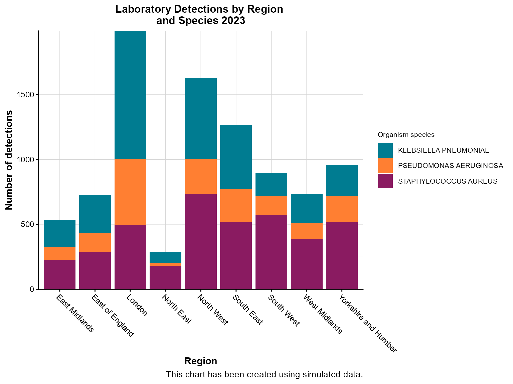
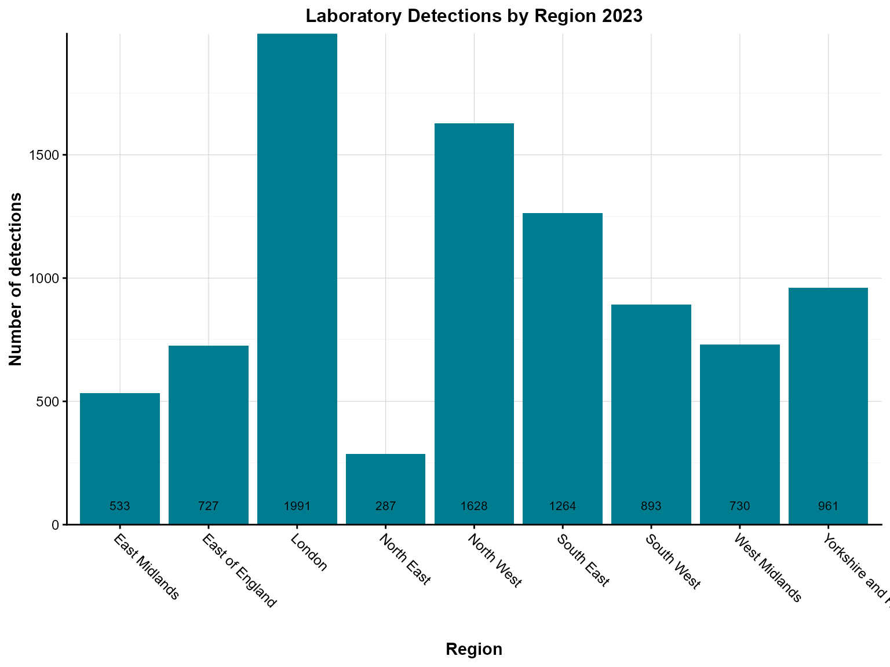
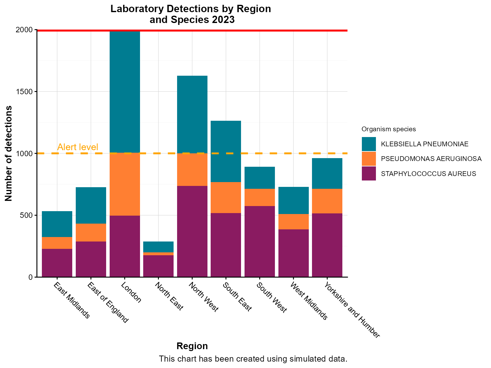

Column charts
col-chart.RmdIntroduction
Column charts are essential tools in epidemiological surveillance for
comparing counts across categories such as regions, time periods, or
organism types. The col_chart() function provides flexible
options for creating both static and interactive column charts with
support for grouping, stacking, labeling, and advanced features like
case boxes and threshold lines.
Example 1: Basic single-series column chart
Simple column charts are ideal for comparing counts across categories. This example shows regional distribution of laboratory detections.
Create the basic column chart
col_chart(
dynamic = FALSE, # Create static ggplot chart
params = list(
df = regional_summary,
x = "region", # Categorical variable for x-axis
y = "detections", # Numeric variable for y-axis
fill_colours = "#007C91", # Single color for all bars
chart_title = "Laboratory Detections by Region 2023",
x_axis_title = "Region",
y_axis_title = "Number of detections",
x_axis_label_angle = -45 # Rotate labels for readability
)
)
Interpretation: This chart clearly shows the regional distribution of laboratory detections in 2023, with London having the highest number of detections and other regions following in descending order.
Example 2: Grouped stacked column chart
When you need to compare multiple categories within each group, stacked column charts are effective. This example shows detections by organism type within each region.
Create the grouped stacked chart
col_chart(
dynamic = FALSE, # Create static ggplot chart
params = list(
df = region_organism_summary,
x = "region", # Primary grouping variable
y = "detections", # Value variable
group_var = "organism_species_name", # Secondary grouping variable
group_var_barmode = "stack", # Stack bars within each group
fill_colours = c("KLEBSIELLA PNEUMONIAE" = "#007C91",
"STAPHYLOCOCCUS AUREUS" = "#8A1B61",
"PSEUDOMONAS AERUGINOSA" = "#FF7F32"), # Named color mapping
chart_title = "Laboratory Detections by Region \nand Species 2023",
chart_footer = "This chart has been created using simulated data.",
x_axis_title = "Region",
y_axis_title = "Number of detections",
legend_title = "Organism species",
x_axis_label_angle = -45
)
)
Interpretation: This stacked chart reveals both regional differences in total detections and the relative contribution of different organism types within each region.
Example 3: Column chart with bar labels
Bar labels show exact values on each bar, making it easier to read precise counts without estimating from the axis.
Create the chart with bar labels
col_chart(
dynamic = FALSE, # Create static ggplot chart
params = list(
df = regional_summary,
x = "region",
y = "detections",
fill_colours = "#007C91",
chart_title = "Laboratory Detections by Region 2023",
x_axis_title = "Region",
y_axis_title = "Number of detections",
x_axis_label_angle = -45,
bar_labels = "detections", # Show values on bars
bar_labels_pos = "bar_base" # Position labels at base of bars
)
)
Interpretation: The bar labels make it easy to see exact detection counts for each region without having to estimate from the y-axis scale.
Example 4: Interactive column chart with case boxes
Case boxes are useful for highlighting specific data points or adding additional context to your visualization.
Create the interactive chart with case boxes
col_chart(
dynamic = TRUE, # Create interactive plotly chart
params = list(
df = case_box_data,
x = "region",
y = "detections",
group_var = "organism_species_name",
group_var_barmode = "stack",
fill_colours = c("KLEBSIELLA PNEUMONIAE" = "#007C91",
"STAPHYLOCOCCUS AUREUS" = "#8A1B61",
"PSEUDOMONAS AERUGINOSA" = "#FF7F32"),
case_boxes = TRUE, # Enable case boxes
chart_title = "Laboratory Detections by Region \nand Species (Week 1, 2023)",
chart_footer = "This chart has been created using simulated data.",
x_axis_title = "Region",
y_axis_title = "Number of detections",
legend_title = "Organism species",
x_axis_label_angle = -45
)
)Interpretation: The interactive chart with case boxes allows users to explore the data dynamically while highlighting specific data points of interest.
Example 5: Column chart with threshold lines
Threshold lines help identify data points that exceed or fall below important cutoffs, such as outbreak levels or target values.
Create the chart with threshold lines
col_chart(
dynamic = FALSE, # Create static ggplot chart
params = list(
df = region_organism_summary,
x = "region",
y = "detections",
group_var = "organism_species_name",
group_var_barmode = "stack",
fill_colours = c("KLEBSIELLA PNEUMONIAE" = "#007C91",
"STAPHYLOCOCCUS AUREUS" = "#8A1B61",
"PSEUDOMONAS AERUGINOSA" = "#FF7F32"),
# Threshold lines
hline = c(1000, 2000), # Multiple threshold lines
hline_colour = c("orange", "red"), # Colors for each line
hline_label = c("Alert level", "Outbreak threshold"), # Labels for lines
hline_label_colour = c("orange", "red"), # Label colors
hline_type = c("dashed", "solid"), # Line types
hline_width = c(1, 2), # Line widths
chart_title = "Laboratory Detections by Region \nand Species 2023",
chart_footer = "This chart has been created using simulated data.",
x_axis_title = "Region",
y_axis_title = "Number of detections",
legend_title = "Organism species",
x_axis_label_angle = -45
)
)
Interpretation: The threshold lines help identify regions that exceed alert levels (orange dashed line) or outbreak thresholds (red solid line), guiding public health response priorities.
Example 6: Time-series column chart
Time-series column charts are crucial for surveillance, showing temporal patterns in disease occurrence. This example demonstrates weekly aggregation.
Prepare the time-series data
# Create weekly time series data
weekly_series <- epiviz::lab_data %>%
filter(
specimen_date >= as.Date("2023-01-01"),
specimen_date <= as.Date("2023-03-31")
) %>%
mutate(
specimen_week = floor_date(specimen_date, "week", week_start = 1) # Monday start
) %>%
count(specimen_week, name = "detections")Create the time-series column chart
col_chart(
dynamic = FALSE, # Create static ggplot chart
params = list(
df = weekly_series,
x = "specimen_week", # Date variable for x-axis
y = "detections", # Count variable
x_time_series = TRUE, # Indicate this is time series data
time_period = "iso_year_week", # Aggregation period
fill_colours = "#007C91",
chart_title = "Weekly laboratory detections (Q1 2023)",
x_axis_title = "Week",
y_axis_title = "Number of detections",
x_axis_label_angle = -45,
# Custom styling for time series
x_axis_date_breaks = "2 weeks", # Show every 2 weeks
x_axis_date_labels = "%b %d" # Format: Jan 01
)
)Weekly laboratory detections between January and March 2023.
Interpretation: This time-series chart reveals weekly patterns in laboratory detections, helping identify trends, seasonal effects, and potential outbreaks.
Tips for column charts
Data aggregation: Always aggregate your data appropriately before passing it to
col_chart(). The function expects pre-calculated counts or values.-
Color mapping: Use named color vectors for grouped data to ensure consistent colors across charts:
fill_colours = c("KLEBSIELLA PNEUMONIAE" = "#007C91", "STAPHYLOCOCCUS AUREUS" = "#8A1B61") -
Grouping options:
-
group_var_barmode = "stack"for stacked bars (shows composition) -
group_var_barmode = "group"for grouped bars (shows comparison)
-
-
Bar labels: Use
bar_labelsandbar_labels_posto show exact values on bars:-
"bar_base"- at the base of bars -
"bar_centre"- at the center of bars -
"bar_top"- at the top of bars
-
Case boxes: Enable
case_boxes = TRUEfor interactive charts to highlight specific data points.Threshold lines: Use
hlineparameters to add horizontal reference lines for alert levels or targets.Time series: When working with dates, set
x_time_series = TRUEand specify the appropriatetime_periodfor proper aggregation.Interactive features: Set
dynamic = TRUEfor interactive charts with zooming, hovering, and filtering capabilities.Chart footers: Add
chart_footerto provide context about data sources or limitations.Label rotation: Use
x_axis_label_angle = -45for long category labels to improve readability.